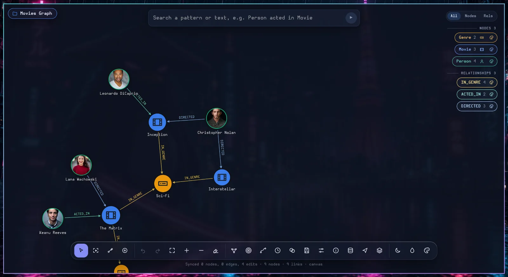

Search, not query
Type Person acted in Movie or a property value. The app compiles patterns, suggests only real schema steps, and brings matches onto the canvas.
Local-first · Relate embedded · v0.1
Graph Craft Relate is a desktop workbench for connected data. Search a graph without writing a query, shape it on a live canvas, run the algorithms, and hand the same surface to an agent.
Linux · macOS · Windows · Arch/AUR · signed in-place updates
FIG. 01 The canvas is the interface. Everything else is a panel.
The workbench
Search first, then work the graph: inspect, edit, analyze, and keep a view. No dashboards, no query console, no ceremony.
Type Person acted in Movie or a property value. The app compiles patterns, suggests only real schema steps, and brings matches onto the canvas.
Drag, group, filter, and lay out. Stage node and edge edits, review schema changes, then sync. The save pill keeps work visible.
Paths, waves, communities, PageRank, betweenness, cycles, HITS, geo radius. Results become overlays, groups, and saved perspectives.
Perspectives save selection, positions, layout, styles, groups, notes, and analysis. Reopen a graph exactly as you left it.
Import from Neo4j/Aura with standard Bolt URIs or the HTTP Query API. Multi-label nodes keep every label; the common label no longer steals color.
Native bundles for Linux, macOS, and Windows, signed in-place updates, file associations, and projects that are just folders on disk.
Specimen
The Movies Graph, with images, labels, and relationships. The same canvas runs on your desktop, not in a browser tab owned by someone else.

The loop
Focus a node or select a set. The agent reads the same selection, view, and analysis you do.
Stage edits and relationships, review the schema, sync once. Every change is visible before it lands.
Run an algorithm, inspect the result groups, and save the perspective as evidence.
Export PNG/SVG, a perspective, or a `.rl` bundle. The graph stays portable.
Local-first
Relate is embedded. A project lives where you put it: a directory with a store, files, and a manifest. Move it, back it up, or hand it to someone else.
Investigation/
├── project.json # label, created
├── files/ # source files
├── graph/ # Relate store
│ ├── manifest.json
│ ├── nodes/
│ └── wal/
└── scenes.json # perspectivesLocal · recoverable · yours
Install
Private beta builds are published as signed desktop bundles. Pick your platform; the app updates itself in place on AppImage, macOS, and Windows. Package-manager installs update through the package manager.
Download the AppImage, make it executable, and run it. No install step; the app keeps its projects in folders you choose.
chmod +x Graph-Craft-Relate_*.AppImage
./Graph-Craft-Relate_*.AppImageFUSE 2 is required by AppImage. If it is missing, install fuse2 (Arch), libfuse2 (Debian/Ubuntu), or run with --appimage-extract-and-run.
In-place auto-update is supported for AppImage. The .deb/.rpm packages update through your package manager.
Arch is the reference environment. Use the AUR package when published, or run the AppImage.
yay -S graph-craft-relate-bin
# or: paru -S graph-craft-relate-binBuilding from source needs the Tauri/WebKit stack:
sudo pacman -S --needed base-devel webkit2gtk-4.1 gtk3 \
libappindicator librsvg patchelf opensslArch notes: AppImage needs fuse2. Wayland works natively; on some GPUs, set WEBKIT_DISABLE_COMPOSITING_MODE=1 if the canvas is blank. On ARM/ALARM, build the aarch64 bundle from source.
Omarchy: the app detects Omarchy and offers Follow the Omarchy theme and accent in Settings. It reads the current theme's colors.toml; the option is hidden on other desktops.
sudo apt install ./graph-craft-relate_*_amd64.debDependencies: libwebkit2gtk-4.1-0, libgtk-3-0, libayatana-appindicator3-1, librsvg2-2. Use the AppImage if your release is older than Ubuntu 22.04.
sudo dnf install ./graph-craft-relate-*.x86_64.rpmDependencies: webkit2gtk4.1, gtk3, libappindicator-gtk3, librsvg2. Fedora Silverblue users should use the AppImage or a Distrobox container.
sudo zypper install ./graph-craft-relate-*.x86_64.rpmDependencies: webkit2gtk4.1, gtk3, libappindicator3-1, librsvg2.
Open the DMG, drag Graph Craft Relate to Applications, and launch it.
Beta builds may be unnotarized: right-click the app → Open the first time. Production builds are signed and notarized. Auto-update is in place.
Run the .exe installer (or the MSI). The installer bootstraps WebView2 if it is missing.
Beta builds may show SmartScreen: More info → Run anyway. Production builds are code-signed. Auto-update is in place.
Windows on ARM64: use the x64 build under emulation; a native ARM64 bundle is not shipped yet.
Run the AppImage through appimage-run:
nix-shell -p appimage-run
appimage-run ./Graph-Craft-Relate_*.AppImageA native flake is planned; until then, use the AppImage or a Distrobox container. Do not mix the app's WebKit with a mismatched system runtime.
WebKitGTK/Tauri does not ship a native musl bundle. Use a glibc Distrobox (Arch/Debian) or a Flatpak when available; the AppImage will not run natively on Alpine.
Use the aarch64 bundle. The Relate sidecar is pinned per target (relate-linux-arm64); the app refuses to start with a missing sidecar.
Arch ARM (ALARM) users can build from source with the same dependencies; the AUR package targets x86_64.
The app checks a signed update feed on launch and every six hours. AppImage, macOS, and Windows install in place and ask before restarting. Debian/Fedora/openSUSE packages stay with your package manager.
# AppImage / macOS / Windows
Graph Craft Relate → update banner → Restart
# Arch
yay -Syu
# Debian / Ubuntu
sudo apt update && sudo apt upgradeAgents
The canvas MCP runs through the app's own command registry. An agent selects, focuses, lays out, styles, analyzes, and stages edits exactly like the human — with the same confirmations and read-only scope.
get_focus reads the human's selected node and its context.--scope read, exact confirmations, base_rev/dirty_board.# install the agent skills from npm
npx graph-craft-relate-skills
# the canvas MCP is a stdio server
node packages/canvas-mcp/dist/cli.js \
--app-id ai.graphcraft.relate
# read-only observers
node packages/canvas-mcp/dist/cli.js \
--app-id ai.graphcraft.relate --scope read82 tools · 6 skills · one shared selection
Private beta
Relate is shipping to invited testers first. The source repository is private; the build channel is signed. Ask for access, or follow the install notes when you have a build.